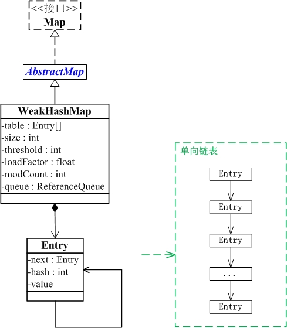

什么是WeakHashMap？
WeakHashMap 继承于AbstractMap，实现了Map接口。
1 | public class WeakHashMap<K,V>extends AbstractMap<K,V>implements Map<K,V> |
和HashMap一样，WeakHashMap 也是一个散列表，它存储的内容也是键值对(key-value)映射，而且键和值都可以是null。
不过WeakHashMap的键是“弱键”。在 WeakHashMap 中，当某个键不再正常使用时，会被从WeakHashMap中被自动移除。更精确地说，对于一个给定的键，其映射的存在并不阻止垃圾回收器对该键的丢弃，这就使该键成为可终止的，被终止，然后被回收。某个键被终止时，它对应的键值对也就从映射中有效地移除了。
这个“弱键”的原理呢？大致上就是，通过WeakReference和ReferenceQueue实现的。 WeakHashMap的key是“弱键”，即是WeakReference类型的；ReferenceQueue是一个队列，它会保存被GC回收的“弱键”。实现步骤是：
新建
WeakHashMap，将“键值对”添加到WeakHashMap中。实际上，WeakHashMap是通过数组table保存Entry(键值对)；每一个Entry实际上是一个单向链表，即Entry是键值对链表。当某“弱键”不再被其它对象引用，并被GC回收时。在GC回收该“弱键”时，这个“弱键”也同时会被添加到ReferenceQueue(queue)队列中。
当下一次我们需要操作
WeakHashMap时，会先同步table和queue。table中保存了全部的键值对，而queue中保存被GC回收的键值对；同步它们，就是删除table中被GC回收的键值对。这就是“弱键”如何被自动从
WeakHashMap中删除的步骤了。
和HashMap一样，WeakHashMap是不同步的。可以使用 Collections.synchronizedMap 方法来构造同步的 WeakHashMap。
在Java8中，当冲突的key变多时，HashMap引入了二叉树（红黑树）进行存储，而WeakHashMap则一直使用链表进行存储。
而WeakHashMap的特点，这里也有总结：
- 基于Map接口，是一种弱键相连，
WeakHashMap里面的键会自动回收 - 支持 null值和null键。和
HashMap有些相似 fast-fail机制- 不允许重复
WeakHashMap经常用作缓存
Java里面引用分为4中类型,而在WeakHashMap则主要用到了WeakReference这个引用。
WeakHashMap数据结构
1 | java.lang.Object |
WeakHashMap与Map关系如下图：

从图中可以看出：
- WeakHashMap继承于AbstractMap，并且实现了Map接口。
- WeakHashMap是哈希表，但是它的键是”弱键”。WeakHashMap中保护几个重要的成员变量：table, size, threshold, loadFactor, modCount, queue。
1
2
3
4
5
6table是一个Entry[]数组类型，而Entry实际上就是一个单向链表。哈希表的"key-value键值对"都是存储在Entry数组中的。
size是map的大小，它是map保存的键值对的数量。
threshold是map的阈值，用于判断是否需要调整map的容量。threshold的值="容量*加载因子"。
loadFactor就是加载因子。
modCount是用来实现fail-fast机制的
queue保存的是“已被GC清除”的“弱引用的键”
关于Entry<K,V>
和HashMap一样，WeakHashMap也是用一个Entry实体来构造里面所有的元素的，但是这个Entry却和HashMap的不同，他是弱引用。
1 | private static class Entry<K,V> extends WeakReference<Object> implements Map.Entry<K,V> |
如上，Entry还继承了WeakReference，所以Entry是个弱引用。何为弱引用呢？就是就是每当进行一次GC,你这个对象就会被清除，当然如果这个对象还存在着软引用或者强引用，就可能不会被清除。
ReferenceQueue queue作用
queue是用来存放那些，被jvm清除的entry的引用，因为WeakHashMap使用的是弱引用，所以一旦gc，就会有key键被清除，所以会把entry加入到queue中。在WeakHashMap中加入queue的目的，就是为expungeStaleEntries所用。
1 | Entry(Object key, V value, |
在构造每一个Entry时，都将它与queue绑定，从而一旦被jvm回收，那么这个Entry就会添加到queue中。
expungeStaleEntries方法
这个方法里面就仅仅是释放value值。由前面的Entry的构造方法可知， super(key, queue); 传入父类的仅仅是key，所以经过仔细阅读jdk源码开始部分分析后，得出结论，在WeakHashMap中，有jvm回收的，仅仅是Entry的key部分，所以一旦jvm强制回收，那么这些key都会为null，再通过私有的expungeStaleEntries 方法，把value也制null，并且把size--。
首先看代码：
1 | /** |
上面代码逻辑为，当在table中找到queue中存在元素时，就把value制空，然后size--。所以在WeakHashMap中，就只有key被回收。下面看一个实例验证。
首先需要了解一点：expungeStaleEntries方法在哪些方面会被调用？
经过阅读源码，发现expungeStaleEntries方法只在以下几个地方被调用：
1 | private Entry<K,V>[] getTable() |
里面，而这个getTable则在下列方法被调用:
1 | `public V get(Object key)` |
应用场景
tomcat的源码里，实现缓存时会用到WeakHashMap。
还有 ThreadLocal。
1 | package org.apache.tomcat.util.collections; |
源码中有eden和longterm的两个map，对jvm堆区有所了解的话，可以猜测出tomcat在这里是使用ConcurrentHashMap和WeakHashMap做了分代的缓存。在put方法里，在插入一个k-v时，先检查eden缓存的容量是不是超了。没有超就直接放入eden缓存，如果超了则锁定longterm将eden中所有的k-v都放入longterm。再将eden清空并插入k-v。在get方法中，也是优先从eden中找对应的v，如果没有则进入longterm缓存中查找，找到后就加入eden缓存并返回。
经过这样的设计，相对常用的对象都能在eden缓存中找到，不常用（有可能被销毁的对象）的则进入longterm缓存。而longterm的key的实际对象没有其他引用指向它时，gc就会自动回收heap中该弱引用指向的实际对象，弱引用进入引用队列。longterm调用expungeStaleEntries()方法，遍历引用队列中的弱引用，并清除对应的Entry，不会造成内存空间的浪费。
参考：
Java8中的WeakHashMap
Java 集合系列13之 WeakHashMap详细介绍(源码解析)和使用示例
WeakHashMap的使用场景